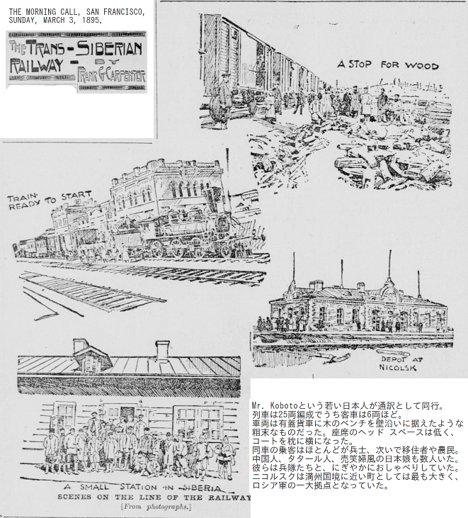
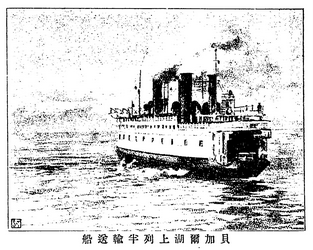
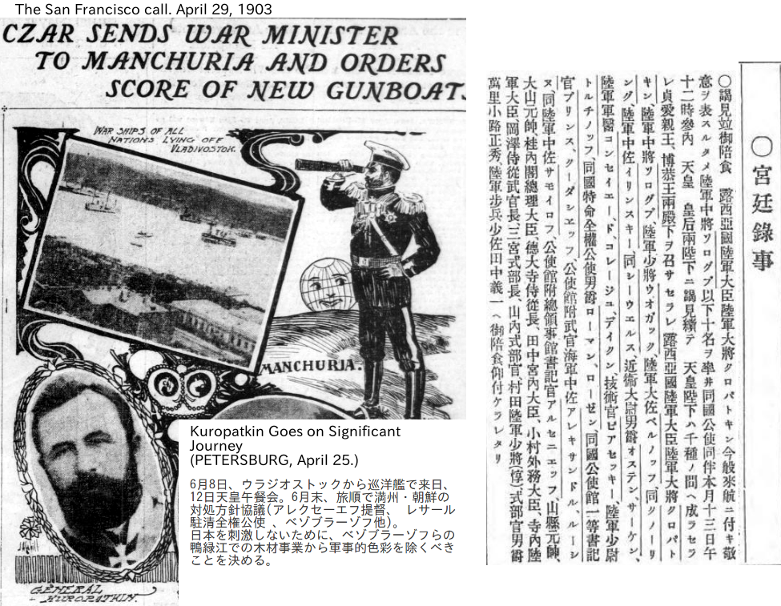
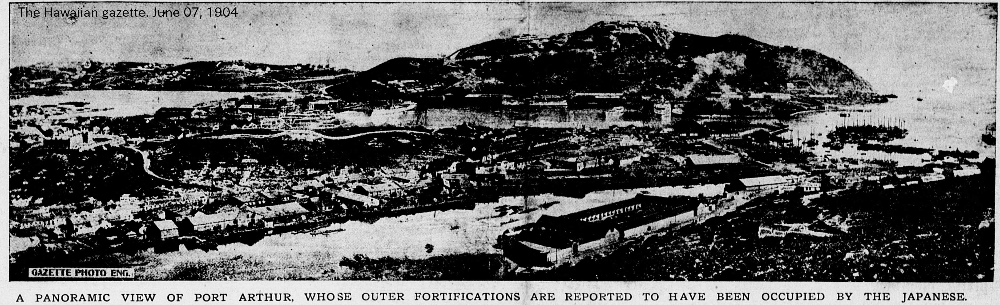
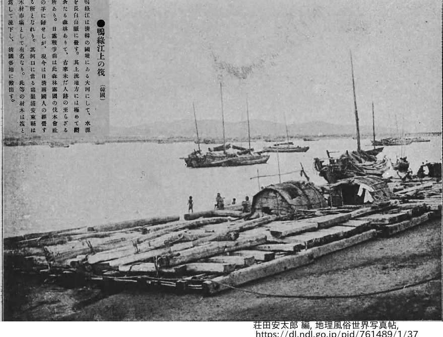

「シベリア鉄道-東清鉄道」の旅行者たち(-1909)¶
「シベリア鉄道」あるいは、Trans-Siberian Railwayとは、ウラル山脈東麓のチェリャビンスクから日本海沿岸のウラジオストックまでを結ぶ路線の全体を表す呼称である。現在では、モスクワからウラジオストックにいたる鉄道網を示す一般的呼称になっている。ここでは、東清(東支)鉄道南部枝線(ハルビン-大連)を含めて扱う。
二十世紀初頭、シベリア-東清鉄道の完成は"Pivot of History"(歴史の転回点)となった。このできたばかりの枢軸線上の旅客には、それぞれに興味深い物語がある。その幾人かの記録をひろってみた。

シベリアー東清鉄道 (1940年代の地図 1 に基づく。地名は多くは日露戦争当時のものを記入。)。概要は、日露戦争前の旅行記 が参考になる。¶
年譜: 事件と旅客¶
1860 北京条約。ロシアの沿海州領有。ウラジオストク建設。
1891 ウラジオストックから西に向かう東シベリア線、チェリャビンスクから東に向かう西シベリア線に着工
1894-1895 日清戦争
1895年3月 米国人の旅行ジャーナリスト、フランク・カーペンターが、数日前に客車運行を始めた、ウラジオストックからニコルスクまでの約70マイルを乗車 [carp95] 。
1895年12月 ウィッテ蔵相主導により仏露の資本にもとづく露清銀行設立。
1897 東端部ウラジオストック-ハルビン間の完成。
1897 清国政府と露清銀行は東清鉄道株式会社を設立。株券所有者は露清両国民に限る。清国領内満州北方の黒龍省西端ー吉林省東境間に鉄道(いわゆる東清鉄道北部線)を敷設し、ロシア領内の鉄道線と連絡させる計画。また、1898年からは東清鉄道南部枝線の敷設にも着手。南部枝線は、北部線上のハルビンから旅順、大連にいたる。東清鉄道の建築方法・規則はロシア側のそれに統一。
1899年12月末 バイカル湖迂回線部分を除きシベリア鉄道の西部はストレチンスクまで開通。
1900年、シベリア鉄道ハバロフスクから西に黒龍江(アムール川)沿岸に敷設する鉄道の計画は中断された 2 。一方、東清鉄道北部線はまだ工事中である。したがって、ストレチンスク-ハバロフスク間はアムール川を船でつないだ。冬季アムール川の蒸気船は5月半ばまで運行できなかったので、田邊朔郎は蒸気機関(蒸気船、汽車)だけによってシベリアを通りぬけた最初の旅行者の一人となった。
1900年5-7月 参謀本部依頼、田邊朔郎のシベリア鉄道調査行 。
「午後十時半列車輸送船に乗り湖を渡るに五時間を費してバイカルに着したり
此列車輸送船は実に西伯利(シベリア) 鉄道の偉観にして船は英国
アームストロング社製四千二百噸(トン)` 機関車と車両二十五台を載
することを得」
1900年6月 北清事変(義和団の乱)。建設中の東清鉄道が破壊される。ロシア軍の満州駐留。
1900年 クロパトキン陸相は東清鉄道建設にともなう極東ロシア軍増強の必要性と実現性について以下のようなメモを提出。
所要の兵力増強を実現するには今後6〜7年はかかる。この事実と、わが鉄道の輸送能力の限界とを考えると、兵力不足で早急な増強も望めないという不利な状況のまま戦争に引き込まれることのないように、対外関係には細心の注意をはらうべきである。
1901年 アルフレッド・ステッド 夫妻の新婚旅行。おそらくロシア人以外では初めての東清鉄道南部-シベリア鉄道を貫通しての旅行。8月、大連はまだ建設中なので旅順からハルビン行に乗る 3 。旅順からハルビンまでの北上に14日間(洪水による遅延のため)を要した。ハルビンでは偶然に、ロシア駐清全権公使に赴任する パーヴェル・レサール と会う。大興安嶺山脈のトンネル未完のため汽車は当面の仮線上をスイッチバックにより登・降坂した 4 。ハルビン->チタ->バイカル湖列車輸送船->西シベリア線->モスクワ->ペテルブルク。
1901年9月- 伊藤博文海外巡遊 (海路、米仏経由で、露、独、英、伊)。11月26日モスクワ着。日露協約案をもって皇帝に謁見、外相他と会談したが、ロシアの日本軽視、また、日英同盟を優先する桂内閣の方針もあり、努力は実らず。
1902年1月 日英同盟調印。
1902年4月8日 ロシア-清国の満州還付条約調印。(ロシアは「1903年10月8日までにロシア軍の満州からの撤退、等。)
1902年 東清鉄道北部線に外国人旅客受け入れ開始。
1902年8月-11月 戸水寛人の満州調査 。
1902年10月 ウィッテ蔵相の東清鉄道視察。旅順、大連、ウラジオストック等視察後、クリミアに転地中のニコライ二世のもとに直行。ロシアの満州経営の杜撰な状況を報告し、満州から撤兵して東清鉄道北部線沿いの入植に重点化すべきことを進言 [lukoi] 。進言は採用されず。
1903年4月-6月 4月末、クロパトキン陸相が特別列車で満州に向かう。
1903年4月-5月 韓国在住の米国人 ホーマー・ハルバート らが東清-シベリア鉄道でヨーロッパに行く。簡潔で実用的な シベリア鉄道旅行案内 を残す。
1903年7月 ロシアが鴨緑江の朝鮮側に居留地建設。
1903年7月14日 東清鉄道の定期運転開始。サンクトペテルブルク-ハルビン間の直通切符発売。
1903年9月-1904春 ガージャール朝ペルシャ(イラン)の前宰相 ミールザー・アリ・アスガル・ハーン一行のHajj 。(テヘラン発、カスピ海をバクーに渡り、バクーからモスクワ経由でシベリア鉄道、東清鉄道、さらに、上海、北京、旅順を見てから、1903年12月に長崎に渡る。日本、米国、欧州を経由してメッカに巡礼。)
1903年10月8日 ロシアの満州撤兵期限。東清鉄道防御のため、撤兵できないことは全関係者にとって自明。同日、満州における米国の商業的地位を保証する米中の通商条約調印。(中国側の批准はロシアの干渉により翌年1月まで持ち越された。)
満州北部、マンチュウリ付近の情景(1903末-1904年1月頃)：
シベリアはこの3年間ほとんど変わっていないが、満州は大きく変貌した。ロシア-満州国境から5マイル東の町は鉄道によって生まれた。レンガ造りの立派な建物がならび、モンゴル人との取引のための大きな市場もある。
(Wirt Gerrare, A secret agent in Port Arthur, London, Archibald Constable & co., 1905)
1904年1月 英国軍の輜重将校ネイサン少佐のシベリア鉄道視察。全体に脆弱でとても兵站利用に耐えないとの感想。
1904年1月25日 ロンドン王立地理学協会で、ハルフォード・マッキンダーの論文、"Geopolitical Pivot of History"読み上げ。コロンブスの航海から400年余、シベリア鉄道がロシア内陸を太平洋につないだいま、地理的探索の時代がほぼ終わり、世界地図上に所有権の主張されていない空白域がほとんどなくなってしまったこと、それが今後の歴史に必然的に意味するところを説いた。
1904年2月〜 日露戦争
ロシア軍にとって、特にバイカル迂回線から東清鉄道全線において、保線用員、エンジン、水、石炭、その他、何もかも不足していた。開戦時は真冬でイバイカル湖では列車輸送船も動かせず、露軍兵士は氷結した湖上を徒歩で29哩の距離を渡った。装備は橇に載せて運んだ。3月に入ると、気温の変動で氷が不安定となり、重量物の氷上輸送はさらに容易ではなくなった。
1904年2月23日 日韓議定書 (韓國は施政の改善に關し日本の忠告を容れること)
1904年3月 クロパトキン将軍、装甲列車に乗り、シベリアー東清鉄道経由で戦線着。
1904年5月 バイカル湖の汽船運航が再開される。また、大興安嶺トンネルの安定運転開始(トンネル自体は1902年10月に貫通していた)。
クロパトキン [kurop09] によれば、5月から10月の間に満州の露軍は10万人を死傷や病気で喪失。この間の補充は21,000人にとどまった 5 。
1904年8月19日- 旅順攻囲戦。
1904年8月22日 第一次日韓協約 (韓國は日本の推薦する日本人一名を財務顧󠄁問、日本政府の推薦する外國人一名を外交󠄁顧󠄁問として傭聘すること。)
1904年9月25日 バイカル湖迂回線開通。
1905年1月1日 旅順陥落。
1905年1月 サンクトペテルブルクでの「血の日曜日事件」(1月22日)を発端にロシア帝国全土で暴動。
陸上輸送路について言うなら、満州のようにまともな道路の乏しい国においては、
鉄道路線が最も重要な役割をになうことが容易に理解できるであろう。両陣営は
多かれ少なかれ鉄路両側の限られた範囲内で作戦展開するほかなかった。
(Joseph E. Kuhn, Reports of military observers attached to the Armies in
Manchuria during the Russo-Japanese war. Part III., Government Printing
Office, Washington, 1906)
1905年2-3月 奉天会戦。3月10日、奉天陥落。
日本軍はロシアの機関車を
機関車と車両は日本から大連に輸送され、くみたてられた。(中略)日本軍の大連占領
が5月末、遼陽に(日本軍の)最初の列車が達したのが4ヶ月後の10月1日であった。狭軌
化の作業は単純であり、片方のレールの鋲をはずしてからずらすだけのことである。
また、奉天会戦の後まで、軍の需要に見あうように汽車の運行をふやす努力は特に行
われなかった。その間、十分でない鉄道輸送をおぎなうために、数百万円の大金を費
やして数千台の荷車を現地で雇わなけれならなかった。
(中略)
(狭軌化ができるまでは)広軌の車両を人力で押した。一車両に15-18名の苦力や兵士が
ついた。一隊は20-30車両からなり、一日に15-18マイル、すなわち一駅間ていどの距
離を進んだ。
(上掲Kuhnレポート)
兵力を消耗した日本軍にとって、このような状況で奉天よりさらに遠く、北満州の荒蕪地に部隊を展開することはほとんど不可能だった。一方、ロシア軍は満州北部に兵力の集積を進めていた。
1905年3月 兒玉満州軍総参謀長帰国し、大本営で陸軍状況、奉天戦後の見通し報告。桂首相、関係閣僚、元老と講和に向けた方針を議論。
1905年5月 日本海海戦(Battle of Tsushima)。
1905年6月9日 日露両国、ルーズヴェルト米国大統領による講和勧告に応じる。
1905年8月 米国ポーツマスで講和会議。9月5日、日露講和条約調印。日本は、遼東半島先端部、および、東清鉄道のうち旅順ー長春の南満州部分とその付属地の租借権を得るまた、韓国に対する排他的優先権を確実にした。
1905年11月 第二次日韓協約。前年8月の第一次日韓協約で、韓国の外交を日本が監視・制約できるようにしたが、第二次協約で日本は韓国の外交権を完全に掌握した。
1905年12月 伊藤博文、初代韓国統監に就任。
1906年11月 日本、南満州鉄道株式会社設立。初代総裁に後藤新平を任命。
1907年6月 ハーグ密使事件 。韓国皇帝(
1907年7月 伊藤統監は韓国政府に高宗を退位させた。さらに、第三次日韓協約を結び、外交権に加えて韓国内政も日本の管理下に置いた。同月、第一次日露協約。その秘密協定では満州・蒙古・朝鮮にかかわる双方の権益を認め合う。
1907年11月 米国タフト陸軍長官一行、特別装甲車両で12日間の北満州、シベリア横断。先に9月末、日本を再訪 7 し、国賓として歓待を受ける。さらに、フィリピンのマニラに行き、マニラから米艦でウラジオストックに渡る。満州・シベリアの印象はといえば、アメリカのサウス・ダコタかネブラスカを思い出させる風景で、いくらでも開拓できそう、というのがタフト夫人の回想である。
未開で、でも、何でも生産できそうな、世界一の空き地です。シベリアは陰惨なところ
で、きっと憂鬱な気持ちになるにちがいないと思っていましたが、じっさいは違ってい
ました。新しい居住地にむかう幸せそうなロシアの移住者たちがつぎつぎと、列車はど
れもいっぱいでした。
Mrs. William Howard Taft, "Recollections of Full Years", 1914, New York.
ペテルブルクには12月3日に入った。ロシア皇帝拝謁のとき、馬車から降りようとして、太り過ぎのタフトのズボンの縫目がさけてしまったという逸話があるが、真偽は定かではない。伝記にある限り、皇帝との会話の中身は他愛のないものである。このころ、米国の一部には投資先としての満州に関心が高まっていたが、この時点ではタフト本人の関心の中心にあったようには見えない。それより、自身の大統領選のことで気もそぞろだった。
米国資本の極東への関心が急速に強まってくるのにともない、ロシア政府内にはロシアー米国の同盟を作って、極東での日本の台頭を抑えようという議論が勢いをもつ。
1908年4-6月 満鉄総裁後藤新平の訪露。ロシアと協力して、南満州鉄道-東清鉄道-シベリア鉄道の世界大動脈を構築することの重要性を確認。
1909年3月 米国タフト政権発足。1909-1910 米国務省は米国資本の海外投資機会の拡張をねらう。満州での鉄道計画をめぐって、清国をはさんで英、独、仏、露、日を相手に米国は強引な交渉を展開するが、成功しない。
一方、ロシア国内では中東鉄道(東清鉄道)の創業以来の赤字が問題となる。ロシア蔵相ココツォフはこれに関連して1909年秋に極東を視察する。
1909年7月 伊藤韓国統監交迭。伊藤は京城を去る直前、日本が韓国の司法事務も専掌する取り決め。
1909年9月-10月 夏目漱石、満鉄総裁中村是公の招待で満州韓国旅行。9月2日大阪から鉄嶺丸に乗る。大連から旅順、営口、奉天、撫順、長春、ハルビンと見て、奉天に戻り、安奉線で鴨緑江北岸の安東縣(9月27日)。そこから平壌に入る。漱石は、朝鮮の土のにおいに、ほっとしたものを感じた。
一度朝鮮に入れば人悉く白し
なつかしき土の臭や松の秋
漱石日記、9月28日
さらに、京城、仁川、開城、釜山->下関に10月14日。紀行「満韓ところどころ」を10月21日から朝日新聞連載。
1909年10月 伊藤博文は7月に韓国統監を辞任して帰国していたが、初めて満州を訪れ、ハルビン で極東視察中のココツォフと非公式に会談することになる [baba42] 。上記満州情勢を背景に会談の目的は様々に論じられてきたが、定説はないようである [asada12] , [choi05] 。菊池寛は「大衆明治史」のなかで、満州旅行を思い立った伊藤に、後藤新平が、ロシア側と極東の将来をめぐる意見交換を行うことを勧めて、ハルビンでのココツォフとの会談を設定したのだとしている。
扨て予は満州に遊びたることなし、多少因縁ある遼東半島にも未だ足跡を印せず、
故に一たびは此処に行かんとの宿志なり、（中略）愈々自分一個の思立にて哈爾濱
(ハルビン)迄旅行を試みむと欲す、到る處清国人にも露国人にも欣んで会見せむ
機会もあるべし、此行勿論直接の利益なしとするも、帰来満州に関する新聞を読みて
了解し得る位の材料を齎らすならむ、諸君の土産になる如き獲物無きを今より断り置く
国際新聞協会員招待会席上に於て（明治42年10月11日、桂首相官邸）
10月16日門司から鉄嶺丸に乗る。18日大連、20日旅順戦跡を弔う。25日長春。長春からはロシア側の仕立てた貴賓車。26日朝9時 ハルビン 駅で待ちうけていたココツォフ蔵相と短時間会談。ココツォとともにロシア守備隊を閲兵した直後、安重根に狙撃される。六発発射された銃弾のうち三発を受ける。中村是公らに抱えられて列車内に戻る。「天皇陛下と夫人とに対する遺言を授け、負傷後三十分を過ぎて午前十時に六十九歳を一期として瞑目した。」 8
その年末、漱石の「満韓ところどころ」連載は旅のなかば、撫順炭鉱見学までで、ぷっつりと終わった。
食後は坑内を見物する事になった。田島君という技師が案内をしてくれた。入口で
安全灯を五つ点して、杖を五本用意して、それを各自に分けて、一間四方ぐらいの
穴をだらだらと下りた。十四五間行くか行かないに坑のなかは真暗になった。カン
テラの灯は足元を照らすにさえ不足である。けれども路は存外平らで、天井もかな
り高かった。右へ曲って、探るように下りて行くと、余のすぐ前にいる田島君がぴ
たりととまった。余もとまった。案内がとまったから、あとから続いて来たものも
ことごとくとまった。ここに腰かけがあります。坑へ這入るものはここで五六分休
んで眼を慣らすんですと云った。五人は休みながらカンテラの灯で互の顔を見合わ
した。みんな立って黙っている。腰をおろすものは一人もない。静かな中で時の移
るのは多少凄かった。そのうち暗い所が自然と明るくなって来た。田島君はやがて、
もうよかろうと云って、またすぐ右へ曲って、奥へ奥へと下りて行った。余も続い
て下りた。あとの三人も続いて下りて来た。
夏目漱石、「満韓ところどころ」
そして、ひとまわり小さい文字で、「ここまで新聞に書いて来ると、大晦日になった。二年に亘るのも変だからひとまずやめる事にした。」と加えて、結んだ。

{kind=link}
{kind=link}
{kind=link}
{kind=link}
{kind=link}
{kind=link}
- 1
Bartholomew's general map of Asia, John Bartholomew & Son [194-?]
- 2
アムール川沿いのいわゆるアムール区間がつながったのは1914年。
- 3
1898年北京条約で、旅順は純然たる軍港としてロシアと清国の艦船のみ使用可、大連を商港として開放と決めた。
- 4
Steadの記事では当時興安嶺の状況が良く分からないが、 ハルバートらの旅行案内 にくわしい。
- 5
日露戦争期のシベリア鉄道の状況は、広瀬健夫、「日露戦争期のシベリア鉄道小考（１）」、 人文科学論集 15 147-160, 1981-03-15、 信州大学人文学部、に詳しい。
- 6
この顛末をはじめ、高宗の無定見さと、高宗をとりまく一部の米国人策動については、伊藤博文の韓国治政に関する非公式アドバイザー役でもあった米国人哲学者George T. Laddの論文に詳しい [ladd15] 。ラッドは、伊藤の暗殺は一部米国人の扇動に責任があるとも言っている。
- 7
前々回は 1904年1月 、前回は1905年7月、いわゆる桂ータフト覚書のとき。1907年9月末のこの訪問では、米国内いでの ref:移民排斥 <immigrationCal> をめぐっての日米間の緊張緩和が主目的。
- 8
小松緑「明治史実外交秘話」
- carp95
Frank Carpenter, The Morning Call紙. March 03, 1895
- lukoi
- kurop09
"Russian Army, and the Japanese War" by General Kuropatkin, translated by A.B. Lindsay, London, 1909.
- asada12
- choi05
Choi Deok-kyu, The russian 'Diplomatic Revolution' and Japan's Annexation of Korea (1905-910), Intern. J. Korean History, vol.7, Feb 2005, pp. 165-207.
- baba42
馬場恒吾、「伊藤博文」、潮文閣、1942.10.
- ladd15
George Turnbull Ladd, "Japan in The Orient, Part One - Korea", J. Race Development, vol.6, No.2, 1915, pp.113-144.
- locsib
"Siberian people and views" c1910, Library of Congress Prints and Photographs Division Washington, D.C., 20540 USA.
田邊朔郎のシベリア鉄道調査旅行¶
田邊朔郎(1861-1944)は土木工学者である。参謀本部の依頼で３９歳のときにシベリア鉄道調査を主として欧米を踏査している。
「田邊朔郎博士六十年史」 [nishikawat13] 及び田邊自身の旅行記 [tanabesk] によると、概略は下記のようである。なお、田邊以前にも、石沢発身らがアムール川のハバロフスクーブラゴベシチェンスク間を往復するなど、部分部分の旅行記がある。田邊の旅は、土木工学の専門家としてシベリア鉄道のその当時の実力を客観的に評価することを目的としたものである。
明治33年(1900年) 北海道庁鉄道部長の職にあったが、3月末で免官となり、翌年9月から京大教授に転出することに決まる。 道庁免官に先立つ１月、政府からシベリア調査旅行の依頼があった。同22日参謀本部を訪問し福島大佐と打合せ、30日山縣総理大臣と話す。
4月20日 桂陸軍大臣を訪う。
5月9日 長崎発、14日釜山、17日ウラジオストック着。19日、午前4時ウラジオ発。20日、ハバロフスク着。22日、河舟に乗る。黒龍江(アムール川)を遡る。29日、午前9時ブラゴベスチシク(ブラゴベシチェンスク)着。 6月3日、午後8時ブラゴベ発乗船。16日、午前９時ストレテンスク着。18日、午前4時ストレテンスク駅発、建築列車便乗。21日、午前8時、ミソワヤ着10時(列車輸送船)乗船す。この日ボーワ人の東行するものより北支那に騒動（義和団の乱）ありし由を聞く。午後3時バイカル着。22日、西行急行列車に乗る。30日、午後4時モスコー着。
7月2日 午前9時ペトログラード(サンクトペテルブルグ)着。同9日、東清鉄道本社で副社長 9 と談話。東清鉄道建設状況を調査。
敷設の場所は爰を隔つること豈万露理の絶東にありて工事に慣れざる支那人を使役し
技術者と工夫との間に言語の異なるが為め意義相通ぜざること数々にして又時々馬賊
の妨害を加ふるあり因って已むを得ず全線に五千の兵を養ひ之が備を為さヾる可らず
加之気候は寒暑の両極端に出会し或は氷雪あるに因み或は水なきを患え運搬の不便譬
ふるに物なく鉄類の如きは一部は之を欧露オデッサ港又は他の欧州港より、一部は之
を北米合衆国より輸送するも孰れも壱万餘里海上に係り其困難言語に盡し難し貴下宜
しく此等の事情に照らして少しく推恕せられたし
(東清鉄道会ケルベツ副社長談)
この後、独仏英を旅し、米大陸はニューヨークからバンクーバーに抜け、その間、各地で土木事業に関する調査・見学。
9月24日 横浜着。
10月 桂大臣と「
明治34年8月 「
- 9
東進鉄道の社長は中国側が選任することになっていたが、1900年以降は空席にされていた。したがって、ケルベツ副社長(=技師長)が経営のトップだった。田邊の手記でケルベツを「社長」とも書いているのはこのためである。
- nishikawat13
西川正治郎 編、田邊朔郎博士六十年史、大正13
- tanabesk(1,2)
田邊朔郎、西伯利鉄道、金港堂、明35.2
戸水寛人のハルビン¶
日露戦争時の対露強行派、いわゆる七博士の一人、
ウラジオストック、9月15日発、翌朝グロデコヴォで東清鉄道側の汽車に乗り替えた。途中、ロンドン・タイムスの北京常駐特派員モリソン 10 と偶然に乗り合わせた。皆、ロシア側から東清鉄道に乗り換えたとき、東清鉄道車両の不潔なことに驚いた。
ハルビンまでの東清鉄道では駅々で停車時間が予定よりかなり長く、汽車が燃料に石炭ではなくて木材を使用しているからと、戸水は推測した。
ハルビンでは市街の地図を入手しようと東清鉄道技師長ユゴーヴィッチ（А.И. Югович）に頼んだりしたが、ロシア側は言を左右してよこさなかったといい、自ら簡単な見取り図を作成した。
{kind=link}
戸水が訪れたときは、新市街はまだ建設が始まったばかりで、行政の中心は旧市街にあった。一方、松花江沿いのプリスタニ(Пристань: 桟橋)地区にはすでに立派な商店が並んでいた。旧市街、新市街、プリスタニの間は各数キロメートルも離れていて、まだ全体に荒漠とした空き地だった。戸水の図には記されていないが、松花江南岸、プリスタニの北側に、鉄道支線と貨物駅があった。日露戦後はプリスタニと新市街とがつながって、一つの市区としてロシア管轄下に置かれた。一方、川沿い、鉄道線路の東側、道外(Daowai)地区には中国人労務者が密集するようになっていった。
戸水訪問当時はハルビンの人口は８万人ほどで、中国人５万、ロシア人３万、日本人約５００人と記録している。
戸水はハルビンに6日間滞在ののち、東清鉄道南部支線で旅順にむかった。奉天では激しい雨で、道路の泥濘をおそれて下車しなかった。彼の記す満州情報は、ハルビン以外では、伝聞と推測と車窓から見える植生から素人判断した土地の肥沃度(「地味」)程度のことで、概して内容に乏しい。
2024年4月18日
- 10
George Ernest Morrison はオーストラリア生まれの伝説的なジャーナリスト。医学博士(1895)だったので、Dr. Morrisonと呼ばれる。満州において日本がロシアに挑むべきことを力説したため、日露戦争をジャーナリスト仲間では"Morrison's War"と呼んだ。後に旅順攻防戦で日本軍随行特派員となる。
- 11
戸水の図をもとに、Xinyue WU論文 [wu22] などから補記した。
- tomiz03
戸水寛人, 東亜旅行談, 有斐閣, 明36.3,
- wu22
Xinyue WU, "HOW CITIES ARE SHAPED - Railway colonization of Harbin and Changchun in Manchuria from 1895 to 1945", AR2A011 Architectural history thesis TU Delft, Mar19, 2022.